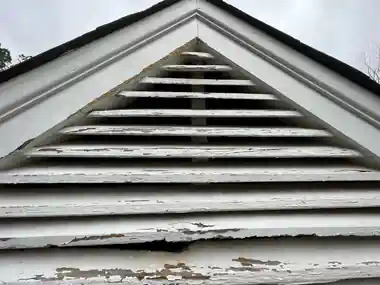
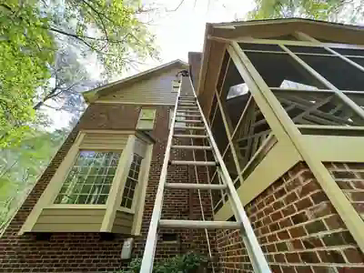
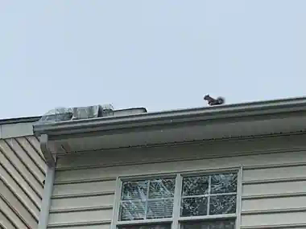
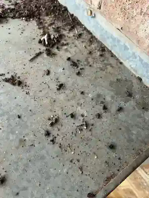
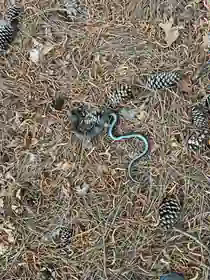
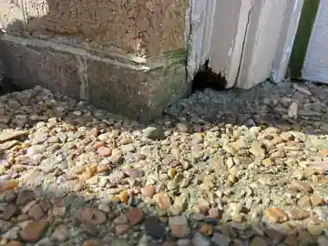
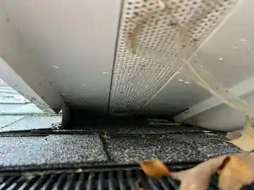
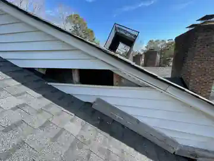
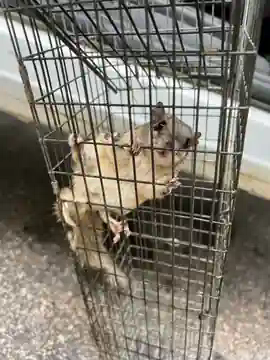

Bats
Evening activity around vents or roof edges, attic sounds, staining near openings, and concentrated droppings may indicate bat use. Small roof transitions and vent openings can provide repeat access.
Ask about bat accessInspection first. Clear answers. Practical next steps.
Hearing scratching, seeing animal activity, or noticing an opening around your home? We inspect accessible rooflines, attics, crawlspaces, and exterior entry points for bats, squirrels, mice, snakes, and related damage.
Wildlife and entry-point inspection—not a code, insurance, storm-damage, engineering, or real-estate home inspection.

Common signs around the home
Wildlife problems often begin with a sound, a sighting, droppings, chewing, or a small opening around the structure.

Evening activity around vents or roof edges, attic sounds, staining near openings, and concentrated droppings may indicate bat use. Small roof transitions and vent openings can provide repeat access.
Ask about bat access
Daytime scratching, gutter travel, or repeated roof activity may indicate squirrel access. Common signs include chewed fascia, damaged soffits, enlarged gaps, and nesting material near roof openings.
Ask about squirrels
Droppings, odors, nesting material, chewing, and activity around crawlspace edges or utility penetrations may indicate rodent access. Mice can use very small openings and protected travel routes.
Ask about rodent activity
Sightings near foundations, crawlspaces, garages, stored materials, or heavy ground cover often indicate favorable shelter or prey conditions. Inspection focuses on access, habitat, and contributing conditions.
Ask about snakesWildlife follows the structure
Wildlife follows repeatable paths through rooflines, vents, soffits, attics, crawlspaces, foundations, and exterior gaps. We inspect the accessible areas most likely to explain the activity, document what we find, and build a practical plan for the property.
We separate what we observed from what was reported, note accessible-area limits, and explain the next practical steps.




A clear route forward
Evaluate accessible areas and identify evidence, travel routes, entry points, and contributing conditions.
Address active wildlife through species-appropriate removal or controlled eviction when appropriate and within scope.
Correct observed access points with durable, animal-resistant materials suited to the existing construction.
Address accessible contamination, nesting debris, or damaged materials when included in the approved scope.
Recommend corrections and maintenance that can reduce the likelihood of recurring access.

Property-specific corrections
When repair work falls within our scope, we develop a correction plan for the observed condition. The goal is to close the access point, restore the protective barrier, and match the existing construction as closely as practical using durable, animal-resistant materials.
Full cosmetic restoration, specialty fabrication, or replacement beyond the approved scope may be quoted separately or referred to another qualified contractor.
Clear, usable findings
We explain what was observed, what matters first, what can wait, what we can correct, and when another qualified contractor is the better next call.
Findings are based on visible, accessible conditions at the time of service. Hidden conditions may exist, and further evaluation may be recommended when the concern extends beyond our scope.
Straight answers
No. This is a limited wildlife and entry-point inspection of visible, accessible areas. It is not a code inspection, engineering evaluation, insurance inspection, storm-damage assessment, or licensed real-estate home inspection.
Depending on access and safety, the inspection may include exterior rooflines, vents, soffits, fascia, siding transitions, foundations, crawlspaces, attics, garages, sheds, and nearby habitat conditions.
We explain what was observed, document accessible findings, prioritize the concern, and provide practical options. Work outside our scope may be referred for further evaluation.
Complimentary inspections are currently available, subject to access, safety, route availability, and the nature of the concern.
We serve Greater RDU, with priority coverage south of Raleigh and along the US-1 corridor. Common service areas include Fuquay-Varina, Apex, Cary, Garner, Raleigh, Durham, Chapel Hill, Pittsboro, Benson, Clayton, Angier, Lillington, Sanford, Knightdale, and Wendell. Other calls are evaluated case by case.
Yes. A clear wide photo and a close photo of the concern often help us understand the next practical step before scheduling.
Tell us what you are hearing or seeing
Call, text, or email with the animal, noise, opening, damage, or concern. Photos are welcome. We will respond with the next practical step and available scheduling.